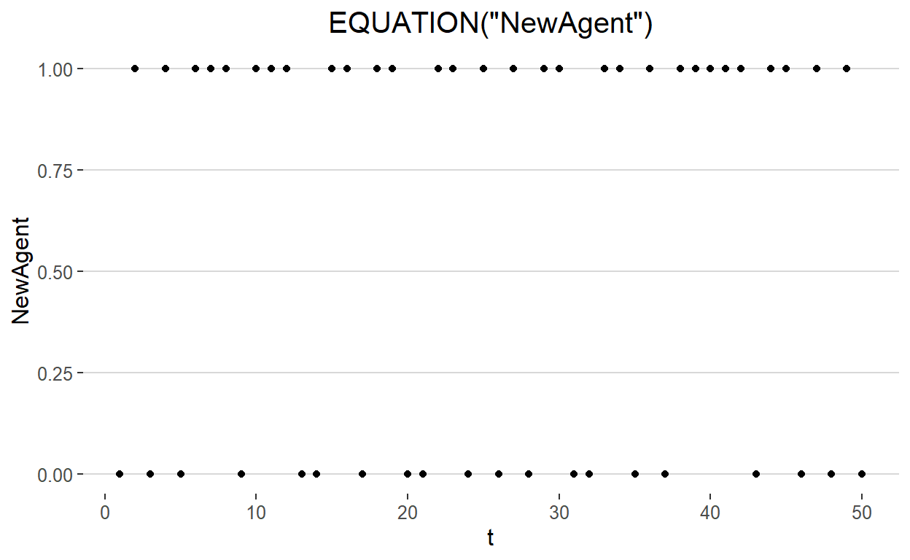
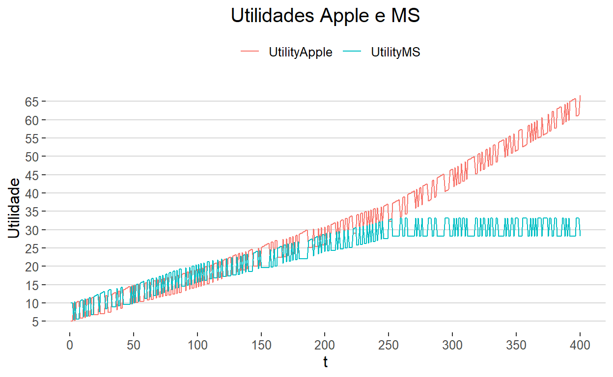
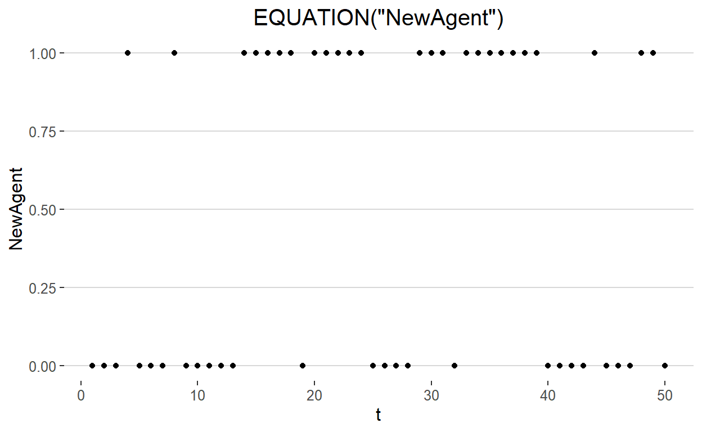
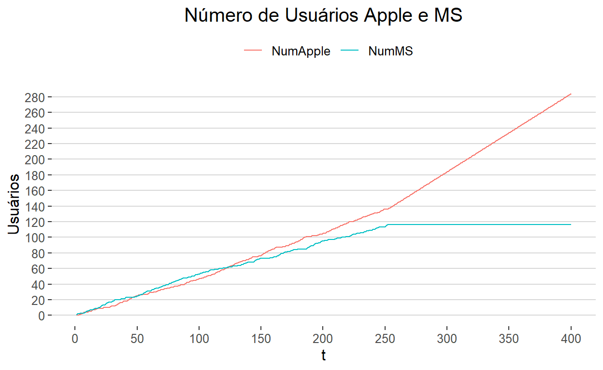

Este post apresenta uma versão em LSD do modelo de externalidades de rede proposto por Brian Arthur.
O modelo de externalidades de rede proposto por Brian Arthur explora a dinâmica de alocação sob retornos crescentes, em um contexto no qual agentes escolhem entre tecnologias que competem entre si para serem adotadas. Quando duas ou mais tecnologias, com retornos crescentes, competem por um mercado de consumidores em potencial, eventos aleatórios podem, por mero acaso, dar uma vantagem inicial para uma delas. Com isso, essa tecnologia passa a ser mais adotada, o que pode fazer com que ela seja mais aperfeiçoada e, como consequência, adotada por mais consumidores ainda. Dessa forma, uma tecnologia que, por acaso, ganhe uma liderança inicial em adoções, pode dominar o mercado, bloqueando — locking out — o crescimento das demais.
Isso ocorre, de acordo com Brian Arthur, pois os consumidores valorizam um produto (ou tecnologia) por dois motivos:
A partir disso, o modelo proposto por Arthur busca examinar explicitamente os efeitos, sobre a dinâmica da adoção de uma tecnologia (ou escolha de um produto), das externalidades de rede.
O modelo aqui discutido considera dois grupos de consumidores, tipo 0 e tipo 1, e dois tipos de produtos, MS e Apple. Um consumidor avalia um produto atribuindo a ele uma utilidade composta por dois elementos:
As preferências dos consumidores são fixas, embora divergindo para cada um dos grupos de consumidores e tipos de produto. O valor de rede, por sua vez, muda com o número de outros usuários usando o tipo de produto em questão.
A partir dessas definições, vamos expressar formalmente a utilidade dos consumidores. Sejam \(v^{MS}_0\) e \(v^{Apple}_0\) as preferências próprias do consumidor tipo 0 para os produtos MS e Apple. Adicionalmente, sejam \(N^{MS}\) e \(N^{Apple}\) os números de outros consumidores que utilizam cada um desses produtos respectivamente. Por fim, seja \(x_0\) o efeito da externalidade de rede para o consumidor do tipo 0. O mesmo é feito para o consumidor tipo 1:
Com isso, quando um agente precisa escolher qual produto comprar, MS ou Apple, ele simplesmente compara as utilidades:
O modelo funciona da seguinte maneira:
A equações requeridas para rodar o modelo derivam dos itens apontados acima (sobre como o modelo funciona), sendo necessário, todavia, uma equação (tanto para utilidade, quanto para número consumidores e sua consequente participação de mercado) para cada tipo de produto. O modelo inteiro é constituido, assim, por 7 equações:
//#define EIGENLIB // uncomment to use Eigen linear algebra library
//#define NO_POINTER_INIT // uncomment to disable pointer checking
#include "fun_head_fast.h"
// do not add Equations in this area
MODELBEGIN
// insert your equations here, between the MODELBEGIN and MODELEND words
EQUATION("NewAgent")
/*
Type of new agent
*/
if(RND < 0.5)
v[0] = 1;
else
v[0] = 0;
RESULT(v[0])
EQUATION("UtilityMS")
/*
Utility in using MS
*/
v[0] = V("NewAgent"); // type of new agent
if(v[0] == 0)
{
v[1] = V("User0MS"); // value for agent type 0 using MS
v[2] = V("User0Net"); // network externalitie coefficiente for agent type 0
}
else
{
v[1] = V("User1MS"); // value for agent type 1 using MS
v[2] = V("User1Net"); // network externalitie coefficiente for agent type 1
}
v[3] = VL("NumMS", 1); // number of existing consumers using MS
v[4] = v[1] + (v[2] * v[3])
RESULT(v[4])
EQUATION("UtilityApple")
/*
Utility in using Apple
*/
v[0] = V("NewAgent"); // type of new agent
if(v[0] == 0)
{
v[1] = V("User0Apple"); // value for agent type 0 using Apple
v[2] = V("User0Net"); // network externalitie coefficiente for agent type 0
}
else
{
v[1] = V("User1Apple"); // value for agent type 1 using Apple
v[2] = V("User1Net"); // network externalitie coefficiente for agent type 1
}
v[3] = VL("NumApple", 1); // number of existing consumers using Apple
v[4] = v[1] + (v[2] * v[3])
RESULT(v[4])
EQUATION("NumMS")
/*
Number of MS users
*/
v[0] = VL("NumMS", 1);
v[1] = V("UtilityApple");
v[2] = V("UtilityMS");
if(v[2] > v[1])
v[3] = v[0] + 1;
else
v[3] = v[0];
RESULT(v[3])
EQUATION("NumApple")
/*
Number of Apple users
*/
v[0] = VL("NumApple", 1);
v[1] = V("UtilityApple");
v[2] = V("UtilityMS");
if(v[2] < v[1])
v[3] = v[0] + 1;
else
v[3] = v[0];
RESULT(v[3])
EQUATION("ShareMS")
/*
Share of MS users
*/
v[0] = V("NumMS");
v[1] = V("NumApple");
v[2] = v[0] / (v[0] + v[1])
RESULT(v[2])
EQUATION("ShareApple")
/*
Share of Apple users
*/
v[0] = V("NumMS");
v[1] = V("NumApple");
v[2] = v[1] / (v[0] + v[1])
RESULT(v[2])
MODELEND
// do not add Equations in this area
void close_sim( void )
{
// close simulation special commands go here
}Vamos analisar cada um dessas equações com mais detalhes. Lembrando que os modelos escritos no LSD são compostos por um conjunto de Equações que são atualizadas em cada período de uma simulação. Essas equações descrevem o comportamento das variáveis que fazem parte do modelo.
A primeira equação do modelo (lembrando que no LSD a ordem das equações não importa) é bem simples e serve para decidir, com probabilidade de 50%, o tipo de agente, tipo 0 ou tipo 1. Em cada período de tempo (da simulação), a variável “NewAgent” assume o valor 0 ou 1, com probabilidade de 50% para cada.
Por exemplo, seja uma simulação com 50 períodos, a variável “NewAgent” apresenta o seguinte comportamento:

As proximas duas equações servem para calcular a utilidade de cada produto (MS e Apple). Como mencionado anteriormente, essa utilidade depende das preferências individuais dos consumidores (tipo 0 e tipo 1) e das externalidades de rede, que por sua vez dependem do número de usuários de cada produto. Ou seja, \(U^{i}_j = v^{i}_j + x_j \times N^{i}\), onde \(i\) pode ser \(MS\) ou \(Apple\) e \(j\) pode ser 0 ou 1.
No código abaixo, que calcula a utilidade de MS em cada período (seja o novo consumidor sendo do tipo 0 sendo do tipo 1), \(v^{MS}_0\) é representado pelo parâmetro “User0MS” e \(x_0\) é representado por “User0Net”. O mesmo ocorre para oa parâmetros do consumidor tipo 1.
EQUATION("UtilityMS")
/*
Utility in using MS
*/
v[0] = V("NewAgent"); // type of new agent
if(v[0] == 0)
{
v[1] = V("User0MS"); // value for agent type 0 using MS
v[2] = V("User0Net"); // network externalitie coefficiente for agent type 0
}
else
{
v[1] = V("User1MS"); // value for agent type 1 using MS
v[2] = V("User1Net"); // network externalitie coefficiente for agent type 1
}
v[3] = VL("NumMS", 1); // number of existing consumers using MS
v[4] = v[1] + (v[2] * v[3])
RESULT(v[4])Por exemplo, digamos que os parâmetros sejam escolhidos com os seguintes valores:
Ou seja, consumidores tipo 0 dão 5 de utilidade para MS e 10 para Apple, e consumidores tipo 1 fazem o contrário, dão 10 de utilidade para MS e 5 para Apple. Além disso, digamos que tanto \(x_0\) quanto \(x_1\) possuam um valor de \(0.2\), ou seja, essa é a influência que cada número adicional de consumidores possui sobre a externalidade de rede tanto para consumidores do tipo 0 quanto para do tipo 1. Vejamo a evolução das variáveis “UtilityMS” e “UtilityApple”, conforme novos agentes vão aparecendo e escolhendo entre um produto e outro.
| t | NewAgent | UtilityApple | UtilityMS |
|---|---|---|---|
| 1 | 0 | 5.0 | 10.0 |
| 2 | 0 | 5.0 | 10.2 |
| 3 | 1 | 10.0 | 5.4 |
| 4 | 0 | 5.2 | 10.4 |
| 5 | 1 | 10.2 | 5.6 |
| 6 | 1 | 10.4 | 5.6 |
| 7 | 1 | 10.6 | 5.6 |
| 8 | 0 | 5.8 | 10.6 |
| 9 | 0 | 5.8 | 10.8 |
| 10 | 0 | 5.8 | 11.0 |
Como visto na tabela, o primeiro agente foi do tipo 0, que atribui utilidade 10 para MS e 5 para Apple. Como 10 > 5, esse agente escolhe MS. O segundo agente também é do tipo 0 e atribui 10 para MS e 5 para Apple, porém como já há 1 consumidor utilizando MS, e a externalidade de rede é \(x \times N = 0.2 \times 1 = 0.2\), a utilidade total de MS é 10.2. O terceiro agente é do tipo 1, que atribui 5 para MS e 10 para Apple. Nesse terceiro períoro já há 2 agentes utilizando MS, portanto a utilidade de MS é acrescida de 0.4. De toda forma, porém, 10 > 5.4, e esse agente escolhe Apple. No longo prazo essas variáveis evoluem da seguinte forma:

É possívle observar que após um certo período (em torno de \(t=250\)) a utilidade de apple sempre será maior que a de MS, independente do tipo de agente que entrará em seguida. Isso por que a externalidade de rede ultrapassa a diferença de preferências próprias entre os tipos de agentes. A partir desse ponto, todo novo agente irá escolher Apple, o que faz com que o número de usuários desse produto cresça continuamente, enquanto o número de usuários MS permaneça constante (a sua curva de utilidade irá alternar entre os valores 10 e 5 acrescidos da externalidade derivada do número de agentes que escolheram MS até o ponto em que a utilidade MS ultrapassava a de Apple a depender do tipo do agente).
A equação do número de usuários de cada produto simplemente compara os valores das utilidades de MS e Apple, calculadas nas equações mostradas anteriormente, e aumenta em uma unidade o valor do número de usuários a depender de qual utilidade é maior.
EQUATION("NumMS")
/*
Number of MS users
*/
v[0] = VL("NumMS", 1);
v[1] = V("UtilityApple");
v[2] = V("UtilityMS");
if(v[2] > v[1])
v[3] = v[0] + 1;
else
v[3] = v[0];
RESULT(v[3])A sua evolução é semelhante à da utilidade, dadas que ambas incrementam quando há uma adição de um agente nesse produto em específico. Recapitulando, em cada período surge um novo agente que deve escolher entre MS e Apple; para fazer tal escolha, esse agente compara as utilidades desses dois tipos de produtos. Além disso, há dois tipos de agentes, que atribuem valores diferentes para sua preferência individual entre MS e Apple. Assim, em cada período, cada novo agente computa as utilidades dos dois produtos — a partir da sua preferência individual e da externalidade de rede, que depende do número de usuários em cada produto — e escolhe o produto com maior utilidade. Com isso, vai aumentando o número de usuários de cada produto.

Por fim, é computado também o market share dos dois tipos de produtos, o que é feito apenas dividindo o número de usuários de cada produto pelo número total de agentes.
EQUATION("ShareMS")
/*
Share of MS users
*/
v[0] = V("NumMS");
v[1] = V("NumApple");
v[2] = v[0] / (v[0] + v[1])
RESULT(v[2])
Esse modelo explora a dinâmica de um mercado com dois produtos em competição, onde cada usuário adicional de um dos produtos aumenta a externalidade de rede desse produto. Como visto, após certo período o mercado é dominado por um dos tipos de produto e todo usuário novo passa a escolher esse produto, bloqueado — locking out — o outro. Para entender melhor o modelo, foi muito útil analisar as equações de forma separada, buscando observar os inputs que cada equação recebe (parâmetros e outras variáveis) e os outputs que ela retorna em cada período de tempo (os possíveis valores da variável em questão).
ARTHUR, W. B. Competing technologies, increasing returns, and lock-in by historical events. The economic journal, v. 99, n. 394, p. 116–131, 1989.